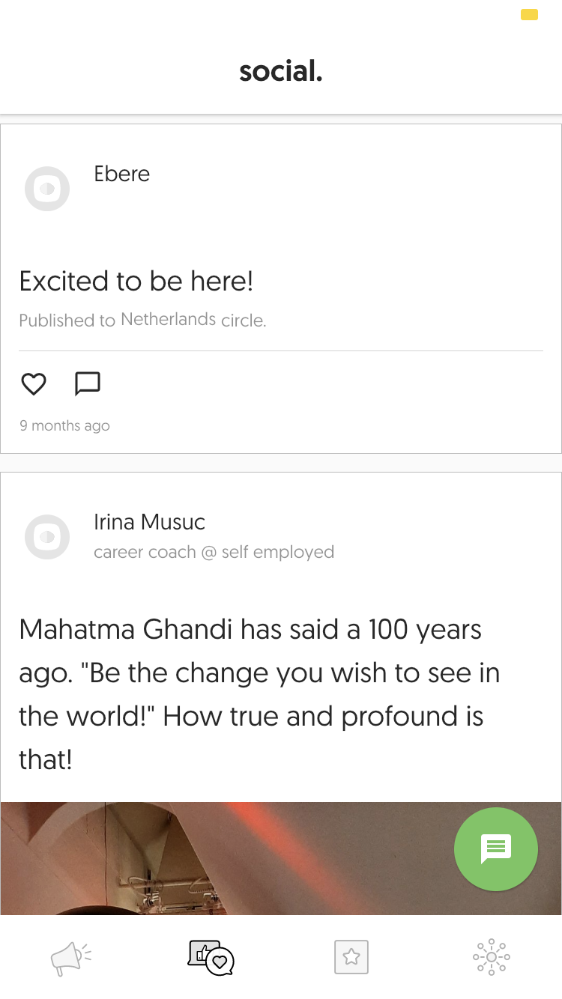
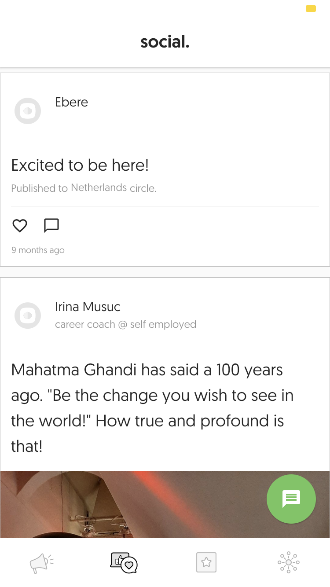

Projects
Viasat Command Line Interface
In my last summer of college, I was invited to join a team at Viasat where I built an internal tool. This was a unique oppurtuntunity where I was able to see a project all the way through its lifecycle. It was also my first time working with another intern which was a great experience. At Viasat, I learned the ins and outs of Clojure, remote work, and developing software in an Agile environment.
I began the summer learning about Clojure, a functional programming language and dialect of Lisp. While I had done some functional programming in Javascript, learning Clojure was certainly a paradigm shift. By the end of the summer, I used it to build a command line tool for viewing and editting the contents of a heirarchical namespace, as well as navigating the namespace like a filesystem. Although we took on most of the CLI work ourselves, my fellow intern and I were a part of a larger Agile team.
After a couple days of learning Clojure and getting set up to work remotely, our project began with a breakdown of an epic. With our manager, we reviewed the expectations of the project and broke down the work into smaller, pointed stories. Each sprint, we took on a few stories and within the two weeks, submitted all of our code, responded to code reviews, and gave demos to a product owner. Because I was working on a team, and our project was bundled into a larger repository, my ability to use git improved dramatically. My manager introduced me to a tool called SmartGit, which was a lifesaver. In addition to learning quite a bit about Clojure and Git, I was also able to get used to effectively working from home.
Like many others, the COVID-19 pandemic forced us at Viasat to work remotely. Over the course of the summer, I got better at communicating online effectively, drawing the line between work and leisure, and managing my time.
I really enjoyed my summer at Viasat despite the atypical circumstance. The folks that were using the tool we built really appreciated our efforts and emphasized how it would not only save them time, but also providing a visual aid for a complex system.
Lean In HUB
 

During the fall of my junior year, I was lucky enough to spend a semester abroad in Barcelona working with some great folks over at Dribba. My time at Dribba was dedicated to building an app for Lean In. Despite not having any experience building mobile apps, I was able to get the hang of it using Flutter, a toolkit from Google that uses the Dart programming language. The app debuted at the 2019 Lean In Conference in the Netherlands with 350+ downloads.
Aside from spending an unforgettable semester in Barcelona, I also took away quite a bit from my time at Dribba. I learned a new programming language, got to work with people around the globe, and built my first mobile app! Even going in to my third year as a computer science major, being asked to build an app almost entirely from scratch was a daunting task. Yet, after a few weeks on the job, some help from my colleagues at Dribba, and countless Google searches I got used to the process. I loved working on a small project where I could see the changes I was making instantly reflected in the UI and behavior of the app. It was the first time I had built something that people would actually use and that felt pretty great!
If you're interested in learning more about the app, check it out on the App Store or the Google Play Store!